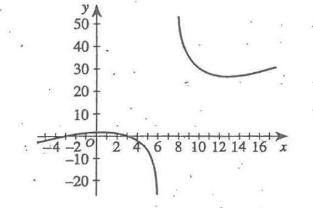

For ACT Students
The ACT is a timed exam...60 questions for 60 minutes
This implies that you have to solve each question in one minute.
Some questions will typically take less than a minute a solve.
Some questions will typically take more than a minute to solve.
The goal is to maximize your time. You use the time saved on those questions you
solved in less than a minute, to solve the questions that will take more than a minute.
So, you should try to solve each question correctly and timely.
So, it is not just solving a question correctly, but solving it correctly on time.
Please ensure you attempt all ACT questions.
There is no negative penalty for a wrong answer.
For WASSCE Students
Any question labeled WASCCE is a question for the WASCCE General Mathematics
Any question labeled WASSCE-FM is a question for the WASSCE Further Mathematics/Elective Mathematics
For GCSE Students
All work is shown to satisfy (and actually exceed) the minimum for awarding method marks.
Calculators are allowed for some questions. Calculators are not allowed for some questions.
For NSC Students
For the Questions:
Any space included in a number indicates a comma used to separate digits...separating multiples of three digits from behind.
Any comma included in a number indicates a decimal point.
For the Solutions:
Decimals are used appropriately rather than commas
Commas are used to separate digits appropriately.
Review:
Given a Rational Function:
To Find the Vertical Asymptote (VA):
(1.) Simplify the function
(2.) Set the denominator to zero (if applicable after simplifying the function)
(3.) Solve for the value of $x$
(4.) $VA: x = value$
To Find the Horizontal Asymptote (HA):
(1.) Arrange the numerator in standard form
(2.) Arrange the denominator in standard form
(3.) If the degree of the numerator is less than the degree of the denominator, $HA: y = 0$
(4.) If the degree of the numerator is the same as the degree of the denominator,
$HA: y = \dfrac{leading\;\;coefficient\;\;of\;\;the\;\;numerator}{leading\;\;coefficient\;\;of\;\;the\;\;denominator}$
If the degree of the numerator is greater than the degree of the denominator, then onto the Slant Asymptote (or Oblique Asymptote)
To Find the Slant Asymptote (SA):
If the degree of the numerator is greater than the degree of the denominator,
$SA: y = quotient\;\;of\;\;\dfrac{numerator}{denominator}$
To Find the $x-intercept$:
(1.) Set $y = 0$
(2.) Solve for the value of $x$
(3.) $x-intercept = (value, 0)$
To Find the $y-intercept$:
(1.) Set $x = 0$
(2.) Solve for the value of $y$
(3.) $y-intercept = (0, value)$
To Find the domain:
What are the values of the input, x that will not give any output, y
Remove those values.
The set of all the input values that will give results when those input values are substituted in the functions is
the domain
For a rational function: the denominator must be non-zero.
No division by zero.
$
f(x) = \dfrac{numerator}{denominator} \\[5ex]
denominator \ne 0 \\[3ex]
$
(You cannot divide something by nothing, neither can you divide nothing by nothing.)
So, we have to find all the values of x for which the denominator is not zero.
To Find the range:
What are all the likely results that could be got from all those input values?
The set of all those output values that could be got when those input values are substituted in the functions is
the range.
Solve all questions.
For any question regarding the domain and the range, express the domain and the range in set notation and interval notation.
Show all work.
